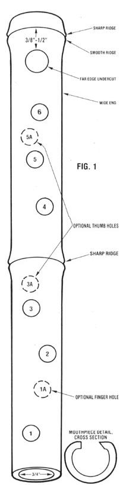
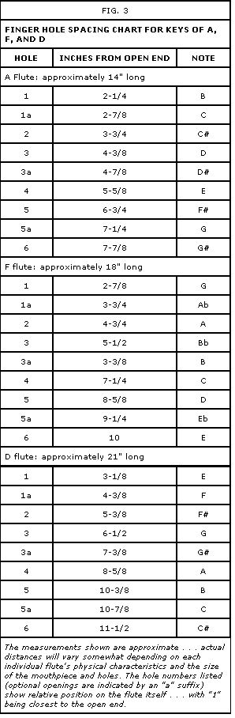

Several years ago a friend gave me a bamboo flute . . . and I became so enamored of the little instrument's pleasing tone and appearance that I set out to learn how to make one myself.
Well, it didn't take me long to discover that fabricating a tube with holes that would make noise when I blew into it was fairly easy . . . but crafting an accurately pitched instrument that played true notes was quite another matter. Luckily though, I soon met Craig Rusbult. He showed me the right way to go about the project, and I'd like to share his instructions with you.
Craig explained that the pitch and key of a homemade wind instrument-as well as the accuracy of each of its notes-are determined by the relationships between several variables: the size, shape, and placement of the mouthpiece and finger holes . . . and the length, internal diameter, and thickness of the tube itself.
The first step along the path of successful flutemaking, then, is to choose good-quality bamboo of the desirable dimensions. The tube's inside diameter should be between 3/4" and 7/8" . . . and Craig adds that thinwalled (about 1/8"-thick) specimens produce the best sound. Also, you should try to obtain a section of stalk that's well seasoned (not green) and free of cracks.
To make a flute that plays in the key of A, you'll need a 14" length of "pipe" . . . for the key of F, an 18" section . . . and for the key of D, a 21 " piece. Look for bamboo with joints that are just a bit more than half as far apart as the intended length of the instrument . . . so that when you cut the piece to size, it'll have a node at one end and another more or less in the middle. (For example, the ideal bamboo "blank" for a 21 " key-of-D flute would have about 11" of open "tube" between each pair of joints.)
And where can you find bamboo? Well, in some larger cities (including my home base, Seattle) sources for the material are listed in the Yellow Pages under-logically enough-"Bamboo". On the other hand, you may very well live in an area where the oversized grass grows wild or in cultivated backyard
Zpatches (it's distributed throughout most of southern half of the U.S., and in much of the north, too). If all else fails, try hunting up some stock at carpet stores . . . flooring is often rolled up on low-quality, but generally usable, bamboo rods.
If the specimen you find is a fairly lengthy piece, so much the better . . . you'll probably want to experiment a bit, anyhow. Indeed, a pole that's several feet long and tapers from a 1" inside diameter at its base to 1/2" at the other is likely to contain enough material for several good 3/4" flutes in its middle.
When you take a good look at your bamboo, you'll probably notice that every joint is marked by two circular ridges (this is true of most species, anyway) . . . and that the one on the joint's wider end is always somewhat "sharper"-in other words, narrower-than the other. Each of these double-rimmed nodes marks the location of a hard inner membrane that divides the tube into joint-to-joint compartments.
To cut a usable piece of the material, choose a good two-section, three-joint length and then-with a coping blade or some other finetoothed saw-cut through the cylinder's broad end just outside the first joint . . . leave the middle node intact . . . and slice off the narrow end just inside the third joint. (Wrap masking tape around each tip before sawing to help keep the fibers from splitting.)
The result will be a two-section tube that's open at the thinner end and closed at the other extremity by that joint's dividing membrane. The interior "bulkhead" at the middle node will also still be intact. You'll need to remove it by chopping it out-a few pieces at a time-with a hammer and a long, sharp tool . . . or burning away the material with a hot poker . . . or boring it out with a drill and a long bit.
Once you've completed the rough work, take a 20" piece of dowel and glue a two-inch strip of sandpaper around each end . . . coarse at one tip and fine-grit at the other. You can use this tool (and a good bit of patience) to give the inside of your flute a smooth finish.
Now, it's time to make your instrument's "blow hole". Measure about 3/8" to 1/2" in from the smooth ridge at the closed end of the flute, and make a mark at that point. (Some kinds of bamboo have ridge creases running lengthwise. If this is the case with your section, you may want to position the mouthpiece about a quarter-turn beyond one of the ridges . . . so the raised part will rest against your chin when you play.)
Once you've located the site for the mouth hole, bore a cavity-using a succession of increasingly larger drill bits (and, again, a "shield" of masking tape) to keep the material from splitting-that's a maximum of 5/16" to 3/8" in diameter. Some flutemakers leave the opening perfectly round, but Craig prefers to "ovalize" his mouthpiece slightly by elongating the hole with a sharp knife or-again-a piece of sandpaper glued to a thin dowel. In any case, you should definitely undercut-by about 15° to 30°-the edge of the opening that'll be farthest from you when you play the instrument (see Fig. 1).
At this point your flute should be capable of making . . . well, if not a true note, at least some sort of sound. Before you can adjust the instrument's pitch, though, you'll have to learn how to produce a simple consistent tone.
Basically, you'll be trying to accomplish the same thing you did as a child when you'd "hoot" by blowing across the top of an open pop bottle. Hold the flute as depicted in Fig. 2, and place your lower lip against the flute near the edge of the hole. Now, purse your lips just a bit and blow a stream of air across, and slightly into, the cavity.
If you don't get a note, rotate the flute so you'll be blowing at a slightly different angle, and try again: You may have to experiment awhile to get it right (a certain amount of perseverance and breath control are required), but if you've followed my instructions correctly, you should eventually be able to make a sound. If you simply can't coax even a little noise from the tube even after repeated attempts, ask an experienced flute player to show you the technique (if that person can't produce a note from your bamboo tube, you may have to rework the instrument).
You'll probably notice-as you practice-that the placement of your lips, and the angle and force of the blown air, have an effect on the audible result. For example, by putting your mouth further over the hole, you'll produce a flatter note. The differences may seem subtle at first, but if you keep at it, you'll eventually develop a feel for the right position for you. The note will then come easily and sound true each time you play it.
Once you've developed this ability, the tone you're making should be the flute's key note . . . that is, if you've made a 21 " key-of-D instrument, the note should be D. Chances are, however, that when you compare the flute's sound against the same note played on a pitch-pipe, tuning fork, piano, or guitar, your instrument's pitch will be slightly off . . . and you'll need to make an adjustment. The mouthpiece's shape and size have some effect in this regard, so-first-make sure you're satisfied with the cavity's configuration and performance, or make any improvements that you feel might help (for instance, you may want to enlarge the hole, or increase the undercut).
If your flute's note is still significantly flat, carefully trim off a very small amount of the instrument's length from the open end . . . play the note to check the flute's pitch . . . and repeat the process as often as needed until the flute reproduces its key note with reasonable accuracy.
Now, you're ready to locate and drill the holes that you'll finger to play the full range of the scale. As you work, keep in mind that the size and-particularly-the placement of each opening in relation to the length of the flute will determine the "trueness" of its note.
I've provided a spacing chart (Fig. 3) that shows you the approximate hole-placement measurements for flutes in the keys of A, F, and D. I stress the word "approximate", however, because variables like the tube's inside diameter, the size of the mouthpiece hole, and the thickness of the bamboo affect the spacing required to produce accurate notes on any given flute.
That's why, in fact, I recommend that you start small and drill each hole in gradually increasing increments up to a maximum diameter of 1/4" to 3/8" . . . and that you check the tone of the note produced at each step. Every time you enlarge the hole, the note will become sharper (higher) . . . and by starting small (flat) and working up, you can pretty much "tune in" each cavity.
Also, as you look at the placement chart, you might notice that there are three "extra" openings, designated la, 3a, and 5a. Most flutes have just six, but Craig has devised a nine-hole system (employing two thumb holes on the underside of the instrument and an additional finger hole). By making more notes available, these additional perforations will allow you to play in two additional keys (those above and below the instrument's base key).
My advice, though, is to make a six-hole model first, and learn to play it fairly well (I'll include fingering charts for six- and nine-hole flutes in Part II). Then add the optional holes to your flute when you've reached the point where you can make good use of the extra notes. (An alternative is to go ahead and make the nine-hole version ... but tape over the three extra openings until you've mastered the basics.)
In any case, drill the hole for the lowest note (the one closest to the open end) first, and once you've tuned it to your liking, proceed to the next, and so on. Remember, though, that the perforations don't have to be in a straight line. As long as you adhere to the recommended distances in the placement chart, you can put each hole anywhere around the circumference of the instrument. Just choose a spot where your finger seems to fall naturally and comfortably when you hold the flute to play.
EDITOR'S NOTE: In the next issue, Marc Bristol will deal with the three F's of the bamboo flute: fine tuning, fingering, and finishing. See Homegrown Music: Make a Bamboo Flute (Part II).
|
Click twice to enlarge. |
 Click twice to enlarge. |
 |